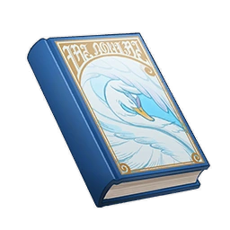

Fontaine · Books & Literature
Tales of a Snow-Winged Goose
This three-part Fontaine fairy-tale collection follows Pers the Penguin, Princess Marcotte, and the long-lived friends Mr. Fox and the Clockwork Guardsman.

A Fontaine Fairy-Tale Collection
Tales of a Snow-Winged Goose collects three short fairy tales: Pers the Penguin, Princess Marcotte, and Mr. Fox and the Clockwork Guardsman. Each volume carries the same cover note that children thought the stories had been written by the kind Madam Snow-Winged Goose of legend. Vindia later explains that people call her by that name; the link to her is a literary persona, not evidence that the tales are real history.
The collection mixes storybook invention, comic asides, and unusually vast images of space, death, and time. Its animals, plants, and clockwork characters remain figures in fables even where they echo Fontaine’s setting.
Volume I: Pers the Penguin
Pers the Penguin begins with a playful account of penguins as spacefaring beings who came to the icy waters south of Teyvat. Their descendants cannot fly in the atmosphere or swim, so Pers seeks advice from other birds. Their advice fails or proves unhelpful; Pers finally sees the stars reflected in the sea and discovers that he can move through the water with his flippers. The other penguins follow and forget their cosmic past.
This is a fable’s imaginative origin for penguin swimming. Its galactic imagery is not a cosmological disclosure about Teyvat’s actual penguins.
Volume II: Princess Marcotte
Princess Marcotte is born in a crab claw and wants to sail rather than settle into the life her father has chosen for her. He imprisons her and the crab claw inside a series of nested containers, then hides them in a lake. To win freedom, she tries jokes and theater until the Mother Lotus laughs and lets her go. Marcotte sails away in the crab-claw ship, which the story offers as the origin of sailors’ tales about such a vessel.
The tale’s comic personification of plants and its invented kingdoms are part of the fairy-tale setting, not an account of Fontaine’s political history.
Volume III: Mr. Fox and the Clockwork Guardsman
Mr. Fox and the Clockwork Guardsman are friends despite their opposing jobs. The Guardsman fears the wear and forgetting of a very long mechanical life, while the Fox has endured unnaturally long life since stealing Death for a lover who later died. They seek Ms. Toad, keeper of Death, and she lets the Guardsman see his eventual end: after hardship, he will be scrapped, and metal life will arise from the waste. He decides he need not rush toward death; the Fox chooses to keep traveling with his friend and delay his own search.
The fable then pushes their story beyond the end of their little world and across worlds. Its future is a deliberately fantastical ending, not a prediction about clockwork beings in Fontaine or an explanation of Teyvat’s afterlife.
This is an original CoreGG reading guide, not an official HoYoverse article or a reproduction of the game text. Source links below identify the records used so you can check the original context.
Sources & references
Check these sources for the original game text and reference trail.